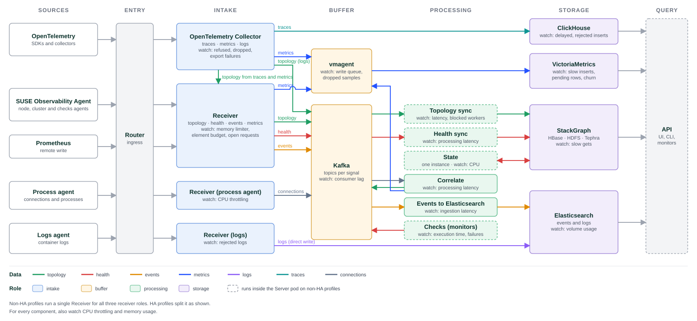

Tune data ingestion for your workload
After installing SUSE® Observability and connecting your data sources, use this guide to adjust ingestion capacity to your actual workload. Check which components are under pressure, adjust their resources or ingestion limits, and verify that the deployment keeps up with incoming data. Repeat these checks as your monitored environment grows.
All changes are made in the Helm values of the suse-observability chart, see Change resources.
The pipeline is the same for every sizing profile. Profiles differ in how many replicas run and in how components are grouped into pods.
Overview

Data passes through five stages:
-
Entry: the Router receives all agent and OpenTelemetry traffic and routes it by path.
-
Intake: the OpenTelemetry Collector and the Receiver authorize and validate data, then write it to a buffer or directly to storage.
-
Buffer: Kafka holds topology, health, events and connections until they are processed. vmagent queues metrics before writing them to VictoriaMetrics.
-
Processing: services consume Kafka topics and turn the data into topology, health states and stored events.
-
Storage: StackGraph holds topology and health, VictoriaMetrics holds metrics, ClickHouse holds traces, and Elasticsearch holds events and logs.
Each stage absorbs short bursts. When a stage cannot keep up for longer, the stage before it fills up: Kafka consumer lag grows, the vmagent queue grows, or the Receiver starts rejecting data.
Differences between profiles
Non-HA profiles run a single Receiver that handles all agent data. HA profiles split the Receiver into three deployments:
-
receiver-basefor topology, health, events and metrics. -
receiver-process-agentfor process and network connection data. -
receiver-logsfor container logs.
On non-HA profiles, Topology sync, Health sync, State, Checks and the API run inside the server pod. On HA profiles each runs as its own deployment. The diagram marks these components with a dashed border.
For a description of each pod, see Advanced troubleshooting.
Data paths
| Data | Path | Stored in |
|---|---|---|
Topology |
Agent → Receiver → Kafka → Topology sync → StackGraph. OpenTelemetry topology derived from traces and metrics goes through the Receiver. Topology derived from logs goes from the collector to Kafka. |
StackGraph |
Health |
Agent → Receiver → Kafka → Health sync → StackGraph. Monitors run in Checks and publish health to Kafka. |
StackGraph |
Events |
Agent → Receiver → Kafka → Events to Elasticsearch ( |
Elasticsearch |
Connections |
Process agent → Receiver → Kafka → Correlate → Kafka (topology) and vmagent (metrics) |
StackGraph, VictoriaMetrics |
Metrics |
Agent, Receiver, Correlate and OpenTelemetry Collector → vmagent → VictoriaMetrics |
VictoriaMetrics |
Logs |
Logs agent → Receiver → Elasticsearch. Logs do not pass through Kafka. |
Elasticsearch |
Traces |
OpenTelemetry → OpenTelemetry Collector → ClickHouse |
ClickHouse |
Signals per stage
For every component, also check CPU throttling and memory usage with the Overrunning requested CPU and Long GCs monitors. A component that is throttled or close to its memory limit is the first candidate to scale.
The How to check column names the SUSE Observability StackPack monitors for each signal, and the check in Check the pipeline without the UI that covers it when the UI is not available. With Self-monitoring set up, these monitors alert by changing the health state of the affected component to Deviating or Critical.
| Component | Overload signal | How to check | What to scale or change |
|---|---|---|---|
OpenTelemetry Collector |
Refused spans or metric points, export failures, processor drops |
OTel Collector - spans refused by a receiver, OTel Collector - metric points refused by a receiver and the export failure and processor drop monitors. Without the UI: OpenTelemetry Collector. |
Collector CPU and memory. If exports fail, check the destination: ClickHouse, vmagent or the Receiver. |
Receiver |
Memory limiter saturation, element budget saturation, a growing number of open HTTP requests |
Receiver - Memory Limiter saturation, Receiver - unique element budget saturation, Receiver - hourly element budget saturation, Receiver - Active number of http requests growing. Without the UI: Data arriving at the Receiver. |
Receiver memory. Element budgets through environment variables, see Receiver element budget saturated. |
Receiver (process agent) |
CPU throttling |
Overrunning requested CPU. Without the UI: CPU throttling. |
Receiver CPU |
Receiver (logs) |
Rejected logs |
Receiver - Logs rejected. Without the UI: Data arriving at the Receiver. |
Elasticsearch disk or log retention. Reduce noisy log sources. |
vmagent |
Growing persistent queue, dropped samples, saturated remote write |
Vmagent - Persistent queue is droppingData, Vmagent - RemoteWrite packets dropped, Vmagent - Remote write connection is saturated. Without the UI: vmagent. |
VictoriaMetrics resources, then vmagent resources |
Kafka |
Consumer lag per topic |
The Kafka lag metric on the Server component, or on Topology sync and Health sync on HA profiles. Without the UI: Kafka consumer lag. |
The consumer of the lagging topic, not Kafka itself, unless Kafka shows disk or CPU pressure |
Topology sync |
Sync latency, blocked sync workers |
Topology Sync - latency too high, Topology Sync - high processing time, Topology Sync - Sync Workers blocked. Without the UI: lag on the topology topics in Kafka consumer lag. |
Topology sync CPU, or a lower topology update frequency on the source |
Health sync |
Processing latency |
Health sync data processing latency. Without the UI: lag on the health topics in Kafka consumer lag. |
Health sync CPU and memory |
State |
CPU usage. State runs as a single instance and does not scale out. |
Overrunning requested CPU. Without the UI: CPU throttling. |
State CPU |
Correlate |
Processing latency |
Correlate - Processing latency. Without the UI: lag on the correlate topics in Kafka consumer lag. |
Correlate CPU and memory |
Events to Elasticsearch |
Ingestion latency |
Elasticsearch data ingestion latency, Elasticsearch data processing latency. Without the UI: lag on |
|
Checks |
Monitor execution time, failure percentage |
Failure percentage |
Checks CPU and memory |
ClickHouse |
Delayed or rejected inserts |
ClickHouse - rejected insert, ClickHouse - delayed insert. Without the UI: ClickHouse. |
ClickHouse CPU, memory and disk |
VictoriaMetrics |
Slow inserts, rejected rows, high churn rate |
VictoriaMetrics - Too high slow insert rate, VictoriaMetrics - Rows rejected on ingestion, VictoriaMetrics - Too high churn rate. Without the UI: VictoriaMetrics. |
VictoriaMetrics memory |
StackGraph |
HBase slow gets |
HBase slow gets |
HBase region server memory and CPU |
Elasticsearch |
Volume usage |
The volume usage view on the Elasticsearch pods. Without the UI: Elasticsearch. |
Elasticsearch disk |
Change resources
The sizing profile sets the resources of every component. To change them for one component:
-
Find the values key of the component:
Component Values key Receiver, non-HA profiles
stackstate.components.receiverReceiver, HA profiles
stackstate.components.receiver.split.base,stackstate.components.receiver.split.processAgentandstackstate.components.receiver.split.logsTopology sync, Health sync, State and Checks, non-HA profiles
stackstate.components.serverTopology sync, HA profiles
stackstate.components.syncHealth sync, HA profiles
stackstate.components.healthSyncState, HA profiles
stackstate.components.stateChecks, HA profiles
stackstate.components.checksCorrelate
stackstate.components.correlateEvents to Elasticsearch
stackstate.components.e2esvmagent
stackstate.components.vmagentOpenTelemetry Collector
opentelemetry-collectorKafka
kafkaVictoriaMetrics
victoria-metrics-0.server, and on HA profiles alsovictoria-metrics-1.serverClickHouse
clickhouseElasticsearch
elasticsearchStackGraph, non-HA profiles
hbase.stackgraphStackGraph, HA profiles
hbase.hbase.regionserver -
Add the new values under
<key>.resourcesto a separate values file, for exampleresources-values.yaml. Set only the values you change. The other values keep the values of the sizing profile. For example, to raise the CPU of the Receiver on a non-HA profile:stackstate: components: receiver: resources: requests: cpu: "1500m" limits: cpu: "3" -
Run
helm upgradewith all the values files you used for the installation, and add the new file last:helm upgrade \ --namespace suse-observability \ --values values.yaml \ --values resources-values.yaml \ suse-observability \ suse-observability/suse-observabilityReplace
values.yamlwith the values files of your installation.
To resize volumes, see Resizing storage. The element budgets of the Receiver are set with environment variables, see Receiver element budget saturated.
How much to add
Raise resources in steps rather than by a few percent at a time. A small step rarely moves a saturated stage, and each step costs a redeploy and a new wait for the backlog to drain.
| Finding | Step |
|---|---|
CPU throttled in 25% to 50% of periods |
Raise the CPU limit by 50%. |
CPU throttled in more than 50% of periods |
Double the CPU limit. |
Overrunning requested CPU: CPU usage more than twice the request for 30 minutes |
Raise the CPU request to the current usage. If the container is also throttled, raise the limit as well. |
Container |
Raise the memory limit by 50%. JVM services derive their heap from the memory limit, so you do not set the heap separately. |
Receiver memory limiter above 80%, OpenTelemetry Collector refuses data, or VictoriaMetrics has more than 5% slow inserts |
Raise the memory limit by 50%. |
Element budget above 95% |
If agents are limited, move to the next sizing profile, see Change the sizing profile. Otherwise raise the per-agent value by 50%. See Receiver element budget saturated. |
Volume or Elasticsearch disk 80% full or more |
Resize the volume so the current data uses at most 70% of it: divide the used size by 0.7. See Resizing storage. Reducing the retention is an alternative. |
-
Raise the request together with the limit, so the scheduler places the pod on a node that has the resources.
-
If several components are short at the same time, move to the next sizing profile instead of raising them one by one. A profile change can change volume sizes and the Kafka partition count, so it takes more than a
helm upgrade, see Change the sizing profile. -
After a change, wait until the Kafka consumer lag stops growing before you judge the result.
-
If two steps on the same stage do not help, the cause is probably not resources. Follow the matching runbook or contact SUSE® Observability support.
The check in Check the pipeline without the UI prints the suggested values and the Helm values keys for the findings it can size.
Reduce resources
If a component uses much less than it gets, you can lower its resources to free capacity in the cluster. Lower them only when all of these hold for at least a week that includes your busiest hours:
-
CPU usage stays below half of the request, and the container is not throttled.
-
Memory usage stays below half of the limit, and the container was not
OOMKilled. -
The Kafka consumer lag does not grow, and none of the monitors for the component alert.
Lower one component at a time, by at most a third, and check the same signals again for a week before the next step. Start with the components you raised before, and return them to the values of the sizing profile first. If most components use much less than the profile gives them, a smaller sizing profile may fit, see Requirements. To move to it, see Change the sizing profile.
JVM services, such as the Receiver, Topology sync, Health sync, State and Correlate, size their heap from the memory limit and keep the memory once they have used it. Their memory usage does not show how much they need, so lower their memory only with the help of SUSE® Observability support.
Do not shrink volumes. To use less disk space, reduce the retention, see Data retention.
Self-monitoring
SUSE® Observability can monitor itself with the SUSE Observability StackPack. The StackPack adds monitors, metric bindings and dashboards for the platform components to the Kubernetes topology of the cluster where SUSE® Observability runs. When a signal crosses its threshold, the monitor changes the health state of the affected component to Deviating or Critical. Each monitor links to remediation steps. To get notified, for example in Slack or by e-mail, see Configure notifications.
Prerequisites:
-
The Kubernetes StackPack is installed for the cluster that runs SUSE® Observability.
-
The SUSE Observability Agent is installed on that cluster and reports to the same instance, or to a second instance used for monitoring.
The agent scrapes platform metrics through pod annotations, which the chart sets by default with stackstate.components.all.metrics.agentAnnotationsEnabled. Scraped metric names get a stackstate_ prefix.
The StackPack provides these dashboards:
-
SUSE Observability - Data ingestion
-
SUSE Observability - Topology processing
-
SUSE Observability - Metrics processing
-
SUSE Observability - Logs processing
-
SUSE Observability - Traces processing
|
When the platform is overloaded, it also processes its own monitoring data late. For production installations, consider sending the platform’s agent data to a separate SUSE® Observability instance. |
Check the pipeline without the UI
When the UI is not available or too slow to use, the suse-observability_pipeline_check.sh script finds the most common problems with kubectl and curl: crashing or throttled pods, rejected data and data that does not arrive. It is a first check, not a replacement for the SUSE Observability StackPack. The script does not change anything in the cluster.
bash suse-observability_pipeline_check.sh [-i <seconds>] [-c <checks>] [-l] [-k] [<namespace>]-
-isets the interval between the two samples, 60 seconds by default. -
-cruns only the given checks, for example-c cpu,kafka. All checks run by default. -
-llists the checks. Each check is described in the sections below. -
-kkeeps the collected metrics in a directory in the current directory, so you can attach them to a support request. -
The namespace defaults to
suse-observability.
The script reads the metrics endpoints of the platform components through kubectl port-forward, and the node metrics through the API server proxy. It reads all metrics twice with the interval in between, so counters are compared over that interval instead of since the pod started. Each finding is reported as OK, WARN or FAIL together with a fix. For CPU, memory, volume and element budget findings, the fix includes the Helm values key and a suggested value, calculated with the steps in How much to add. The script exits with a non-zero status when it finds a warning or a failure. It needs kubectl, curl and awk.
Required permissions
-
In the namespace where SUSE® Observability runs: list pods, get
pods.metrics.k8s.io, and createpods/portforward. -
For the CPU throttling and volume checks: cluster-wide
getonnodes/proxy. The defaultview,editandadminroles do not include it, and some managed node types, such as serverless nodes, do not serve the kubelet metrics. Without it, the script skips the volume check and compares CPU and memory usage with the limits instead of measuring throttling.
The metrics on these endpoints do not have the stackstate_ prefix that the agent adds, unless the name already starts with it.
Pods and memory
Check names: pods, memory.
-
podsreports pods that are not running or not ready, containers that restarted during the check, and containers that restarted before.OOMKilledas the last reason means the container needs more memory. For other reasons, check the logs of the previous container withkubectl -n <namespace> logs <pod> -c <container> --previous. -
memoryreports containers that use 95% or more of their memory limit. A JVM service close to its memory limit spends more time in garbage collection and processes data more slowly.
CPU throttling
Check name: cpu.
Reports the share of CPU periods in which each container was throttled during the check: WARN from 25%, FAIL from 50%. Throttling on the Receiver, Topology sync, Health sync or Correlate delays all data that passes through them. Raise the CPU limit of the throttled containers, see How much to add. Containers without a CPU limit are never throttled and are not reported.
Without permission on nodes/proxy, the check reports containers whose CPU usage is 90% or more of their limit instead. This is an approximation: the usage is an average over a short window, so a container can be throttled while its usage is below the limit.
Volumes
Check name: volumes.
Reports persistent volumes that are 80% full or more, and fails from 90%. Reduce the retention of the data it stores, or resize the volume, see How much to add.
Data arriving at the Receiver
Check name: receiver.
Covers the single Receiver on non-HA profiles and each Receiver role on HA profiles:
-
The number of agent requests with a valid API key per minute. No requests means the agents do not reach the Receiver. Check the agent logs and the ingress or route in front of the Router. Requests with an invalid API key mean some agents use a wrong API key.
-
The memory limiter above 80% means the Receiver is short of memory and starts rejecting requests. Add memory to the Receiver.
-
An element budget above 95% means the Receiver drops data for that element type. See Receiver element budget saturated.
-
Rejected logs. See Logs are missing.
Kafka consumer lag
Check name: kafka.
Reports topics whose consumer lag is above 1000 and growing, or above 100000, and the pod that consumes them. Lag shows which consumer cannot keep up:
-
sts_topo_*andsts_topology_stream: Topology sync. -
sts_health_sync,sts_intake_healthandsts_health_sync_settings: Health sync. -
sts_correlate_*andsts_correlated_connections: Correlate. -
sts_topology_events: Events to Elasticsearch.
Check CPU throttling and memory of that consumer first, and add resources to it. On non-HA profiles, all of these run in the server pod.
vmagent
Check name: vmagent.
In a healthy pipeline, the persistent queue stays close to zero, nothing is dropped or retried, and only successful remote write requests grow. A growing queue, retries or failed requests mean VictoriaMetrics accepts data slower than it arrives. See VictoriaMetrics. Dropped data is lost.
OpenTelemetry Collector
Check name: otel.
-
Refused data means the collector refuses incoming data, usually because its memory limiter is reached. Add memory and CPU to the collector.
-
Failed sends, or an export queue that is 80% full or more, mean the destination does not accept data fast enough.
clickhousestswrites traces to ClickHouse,prometheusremotewrite/victoria-metricswrites metrics andsts_kafka_exporterwrites topology to Kafka.
ClickHouse
Check name: clickhouse.
Reports rejected and delayed inserts during the check. They mean ClickHouse cannot merge data as fast as it arrives. Add CPU and memory to ClickHouse, and check its disk usage.
VictoriaMetrics
Check name: victoriametrics.
Reports the rows inserted per minute and the share of slow inserts for each VictoriaMetrics instance. More than 5% slow inserts means VictoriaMetrics does not have enough memory to cache the active series. Add memory to VictoriaMetrics. Ignored rows are rejected on ingestion, for example because they exceed the label limits. No inserted rows means no metrics arrive, see vmagent.
Elasticsearch
Check name: elasticsearch.
Reports the cluster health and the disk usage of each node from 80%. When disk usage is high, the Receiver lowers the log budget and rejects more logs. Reduce the log retention, or resize the Elasticsearch volumes, see How much to add.
Runbooks
These runbooks start from a symptom and point to the stage to check. The SUSE Observability StackPack monitors with the same name include more detailed remediation steps. If the UI is not available, run the matching check in Check the pipeline without the UI instead. To add resources, follow Change resources with the steps in How much to add.
Topology is delayed or components are missing
-
Check the Kafka consumer lag for the topology topics. If lag grows, Topology sync cannot keep up.
-
Check the Topology sync latency and the Topology Sync - Sync Workers blocked monitor.
-
If a sync worker is blocked, restart the pod that runs Topology sync,
syncon HA profiles orserveron non-HA profiles. Check its logs for the cause after the restart. -
If latency is high but no worker is blocked, check CPU throttling and add CPU to Topology sync. More CPU allows more parallel processing.
-
If one integration causes most of the load, reduce how often that source sends topology.
Receiver element budget saturated
The Receiver limits how many components, relations and connections it accepts from process agents, and how many new components and relations it accepts per hour. Each budget is a value per agent multiplied by the number of agents, so it grows when you add agents. When a budget is saturated, the Receiver drops data for that element type, which shows up as missing topology or connections.
The sizing profile also limits how many nodes you can observe, counted in Default Nodes, see Requirements. Agents above that limit are marked as limited. The Receiver rejects their process, container and connection data, and they do not add to the element budgets. Check this limit first, because raising a budget does not help limited agents.
-
Run
sts agent list, see CLI: sts. The last line shows how many agents are active, limited and stale. Other signs of limited agents are the Nodes limitation notifications in the UI and HTTP 429 responses withMaximum amount of active agents exceededin the agent logs. -
If any agents are limited, move to the next sizing profile. A profile change can change volume sizes and the Kafka partition count, so it takes more than a
helm upgrade, see Change the sizing profile. -
If no agents are limited, the agents send more elements than the default budget per agent allows, for example because they run many short-lived pods or open many connections. Find the saturated
element_typein the Receiver - unique element budget saturation and Receiver - hourly element budget saturation monitors. -
Raise the matching per-agent value by 50% with an environment variable on the Receiver:
Budget Variable Unique components
CONFIG_FORCE_stackstate_receiver_processAgent_maxComponentsPerHostUnique relations
CONFIG_FORCE_stackstate_receiver_processAgent_maxRelationsPerHostUnique connections
CONFIG_FORCE_stackstate_receiver_processAgent_maxConnectionObservationsPerHostNew components per hour
CONFIG_FORCE_stackstate_receiver_processAgent_maxNewComponentsHourlyPerHostNew relations per hour
CONFIG_FORCE_stackstate_receiver_processAgent_maxNewRelationsHourlyPerHostThe current value per agent is the budget maximum divided by the number of agents. The check in Check the pipeline without the UI prints it for the unique budgets. For example, on a non-HA profile:
stackstate: components: receiver: extraEnv: open: CONFIG_FORCE_stackstate_receiver_processAgent_maxComponentsPerHost: "450"On HA profiles, set the variable under
stackstate.components.receiver.split.processAgent.extraEnv.open. -
Run
helm upgrade. A higher budget increases the load on Correlate and Topology sync, so watch their latency afterwards.
Receiver rejects data or requests time out
-
Check Receiver - Memory Limiter saturation. If it stays high, add memory to the Receiver.
-
Check Receiver - Active number of http requests growing. A steady increase usually means the Receiver cannot write to Kafka. Check Kafka health, then restart the Receiver.
-
Check CPU throttling on the Receiver pods. On HA profiles, check each Receiver role separately.
Health states are delayed
-
Check the Kafka consumer lag for the health topics and the Health sync data processing latency monitor.
-
Add CPU to Health sync. Check JVM heap usage and garbage collection time with the Long GCs monitor.
-
If State shows high CPU usage, add CPU to State. State runs as a single instance and cannot be scaled out.
Metrics are delayed or missing
-
Check the vmagent monitors. A growing persistent queue or dropped samples means VictoriaMetrics accepts data slower than it arrives.
-
Check the vmagent logs for write errors to VictoriaMetrics.
-
Check VictoriaMetrics - Too high slow insert rate and the churn rate monitors. Add memory to VictoriaMetrics if slow inserts are high.
-
If the problem is only in OpenTelemetry metrics, check the collector’s export failure monitors.
Logs are missing
-
Check Receiver - Logs rejected. Each log source gets a budget based on Elasticsearch disk space and log retention.
-
If a single source sends much more than usual, for example after debug logging was enabled, reduce its log volume.
-
If the volume is expected, increase Elasticsearch disk space or reduce the log retention.
Events are delayed
-
Check the Elasticsearch data ingestion latency and Elasticsearch data processing latency monitors.
-
Add CPU to
e2es. Check Elasticsearch volume usage and CPU.
Traces are missing
-
Check the OpenTelemetry Collector monitors for refused spans, export failures and processor drops.
-
Refused spans with a busy collector mean the collector needs more CPU or memory.
-
Export failures mean the destination does not accept data. Check the ClickHouse delayed and rejected insert monitors.
Process and connection data is delayed
-
Check the Kafka consumer lag for the connection topics and the Correlate processing latency.
-
Check CPU throttling on Correlate and on the Receiver process agent role.
-
If latency stays high after you add resources, contact SUSE® Observability support.
If none of these steps help, collect a Support Package (Logs) and a Support Package (Performance), and contact support.